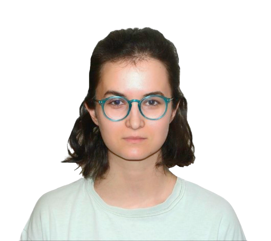
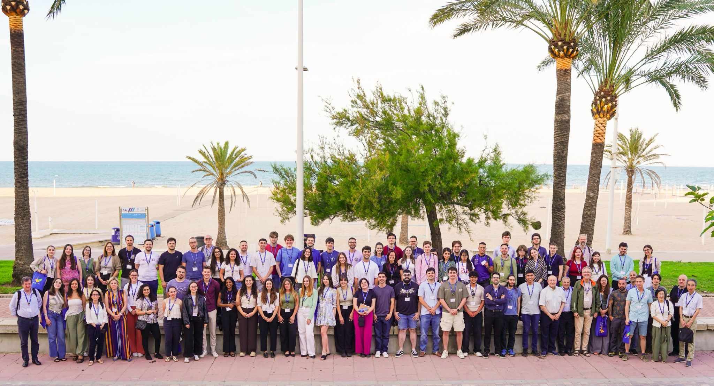
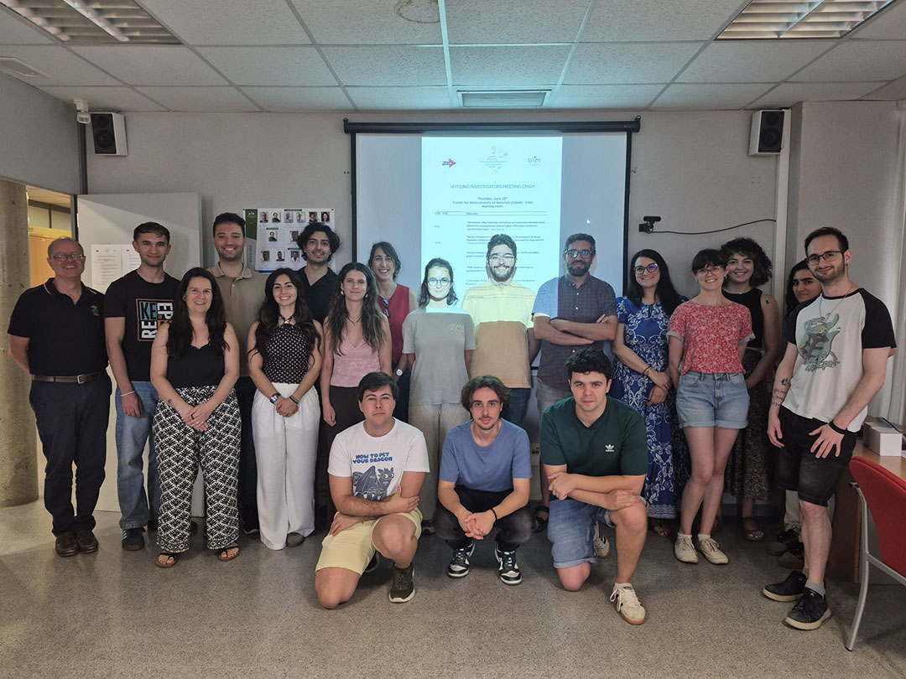

BIOCHEMICAL ENGINEERING · NANOSCIENCE
Olivera
Dekanic.
Biotechnology | Nanoscience | Biomedical Research
Biochemical Engineering and Biotechnology graduate with a Master's degree in Molecular Nanoscience and Nanotechnology. I am interested in how we can use nanotechnology and biotechnology to tackle challenges in medicine.

I <3 SCIENCE
A background built
across disciplines.
My academic background combines biochemical engineering, biotechnology and molecular nanoscience. I am interested in how science, technology, and engineering can come together to develop new ideas, improve existing processes and create solutions with real-world applications.
I am curious about how things work and enjoy exploring ideas from different fields. I like taking on new challenges, learning unfamiliar techniques and approaches, and finding ways to turn ideas into practical results. I know things do not always go as planned, and I am comfortable with failing, adjusting, and improving.
I love working as part of a team, exchanging ideas, and learning from people with different backgrounds, but I am also comfortable taking initiative and working independently.
RESEARCH & DEVELOPMENT
Selected projects.
Exploring materials, testing ideas, and connecting science to real-world applications.
ACADEMIC BACKGROUND
Education.
2025 — 2026
Molecular Nanoscience and Nanotechnology
Universidad Autónoma de Madrid · Facultad de Ciencias · Madrid, Spain
2018 — 2025
Biochemical Engineering and Biotechnology
University of Belgrade · Faculty of Technology and Metallurgy · Belgrade, Serbia
(things I know)
Skills & techniques.
Laboratory Skills
Analytical Techniques
Computer Skills
Languages
SerbianNative
English (TOEFL)C1
SpanishB2
SCIENTIFIC EVENTS
Professional development.

MAY 2026 · GANDIA, SPAIN
ESMolNa/ESAM
Participated in the 19th European School of Molecular Nanoscience (ESMolNa), 3rd European School on Advanced Materials (ESAM), and the 12th Workshop on 2D Materials (W2DM).
View certificate ↗
JUNE 2026 · MADRID, SPAIN
3rd Young Investigators Meeting
Joined young researchers to share scientific work, exchange perspectives and connect with others working across different research areas.
View certificate ↗OTHER EXPERIENCE
Beyondthe lab
DOGMA Brewery
JAN — FEB 2024Internship · Belgrade, Serbia
Performed basic biochemical and quality control analysis during different stages of beer production.
Karate Club Sunce
2017 — 2020Assistant coach · Belgrade, Serbia
Assisted with training younger children and lower-belt students, helped prepare them for belt exams and competitions, took part in training camps.
KPGT Theatre
2018 — 2022Extra · Belgrade, Serbia
Took part as an extra in several theatre productions and helped with front-desk activities, ticket sales, welcoming visitors and promoting upcoming performances.
Ulys'ses Theatre
SUMMER 2023Summer Festival · Brijuni National Park, Croatia
Helped with different tasks during the summer theatre festival at Brijuni National Park, supporting the team and the day-to-day running of performances.
07 / GET IN TOUCH
Let's make
something meaningful.
Interested in working together, discussing research or sharing an opportunity? I'd be happy to hear from you.